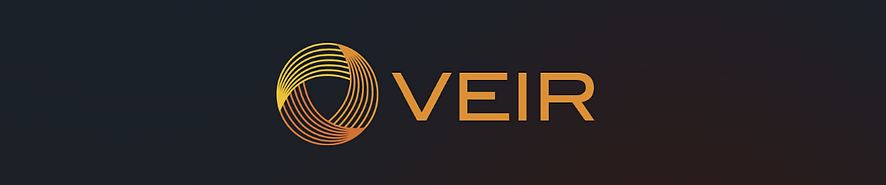

WILDLIFE CROSSINGS ZINE
COURSE: INFRASTRUCTURE STUDIES, FALL 2022
Throughout Infrastructure Studies, we discussed a wide variety of human-made infrastructures and their deep impact on society. We focused on society's dangerous devaluation of maintenance and extraneous desires for new systems. At the end of this course, we chose an infrastructure to research and make the basis of an information zine to share with our Olin community.
Because of my deep interest in merging engineering with sustainability to mitigate negative human impact on the environment, I chose to focus on wildlife crossings. Wildlife crossings enable animals to cross busy highways and mitigate automobile-wildlife collisions. Below, I have included my entire Wildlife Crossings zine, created with Adobe Illustrator and InDesign.